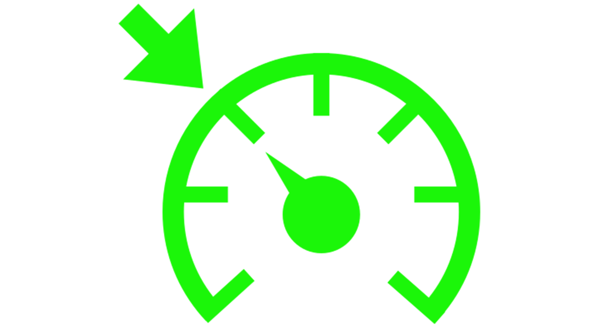
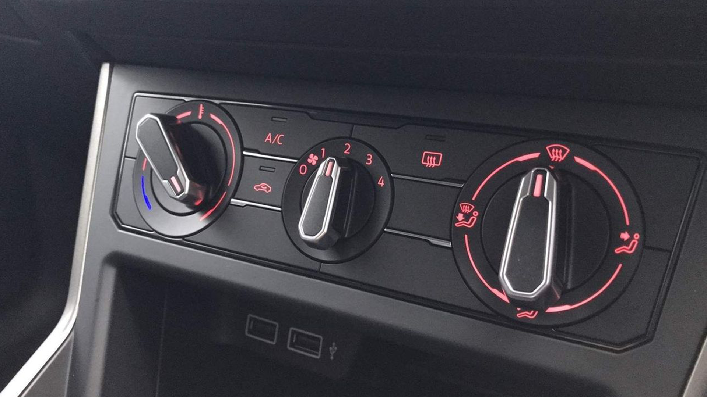
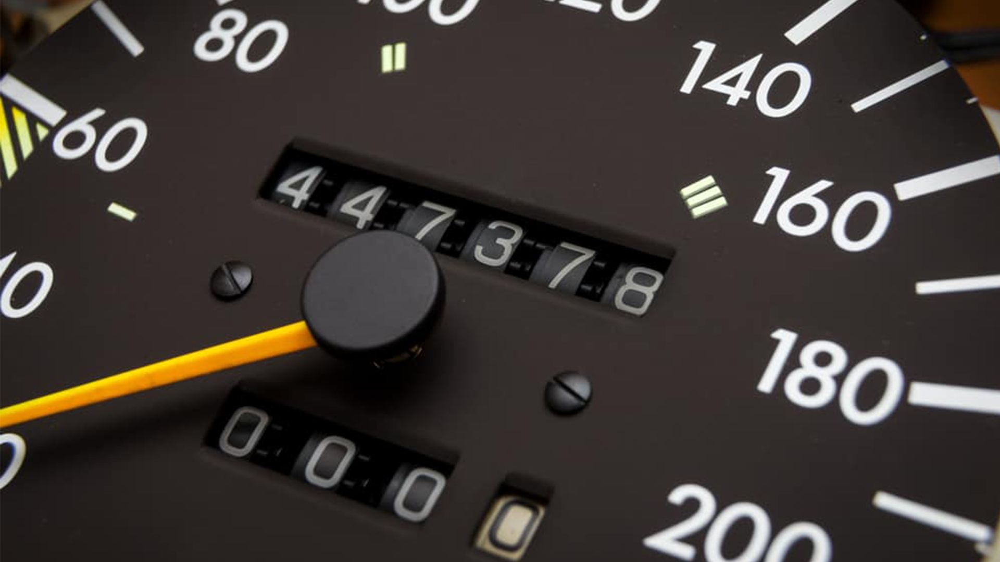
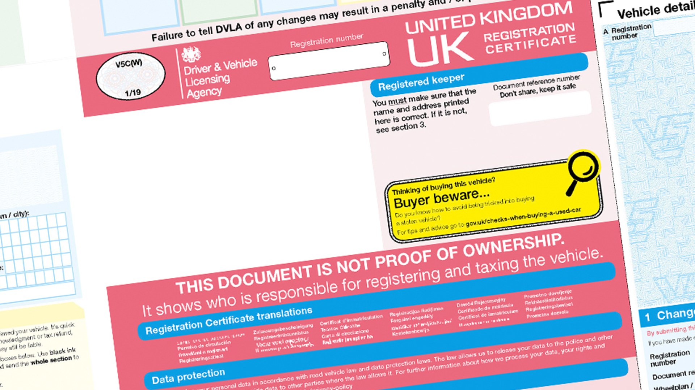
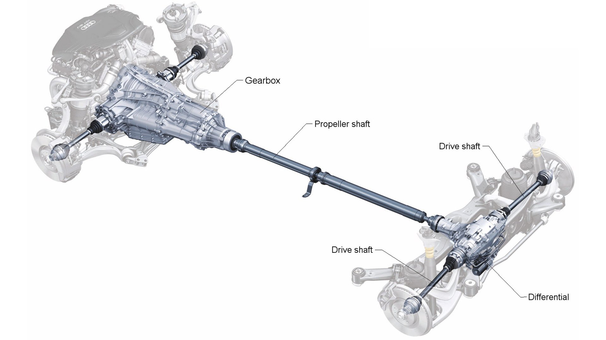
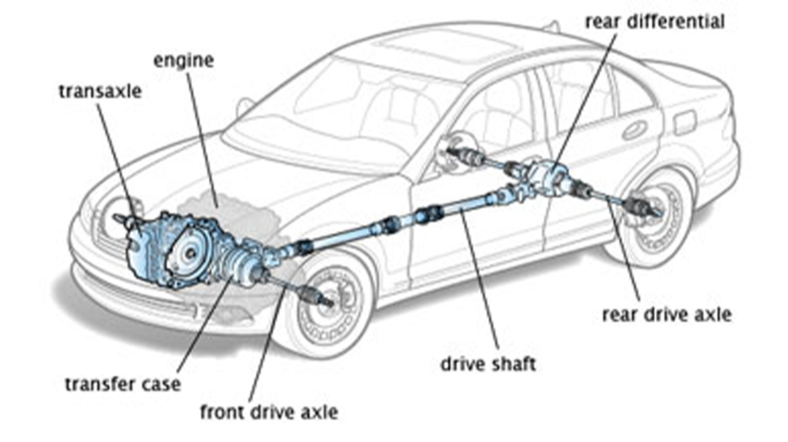
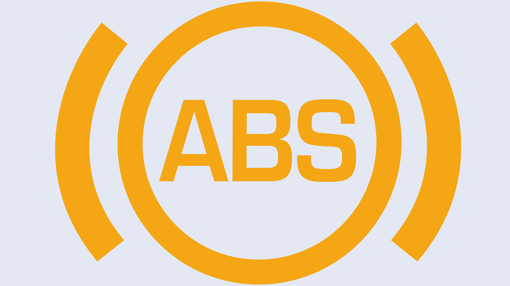
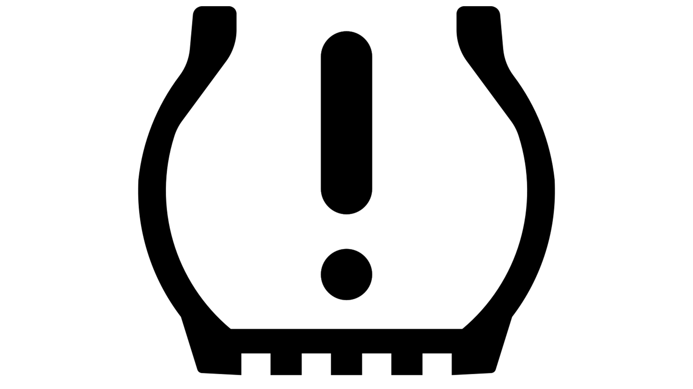
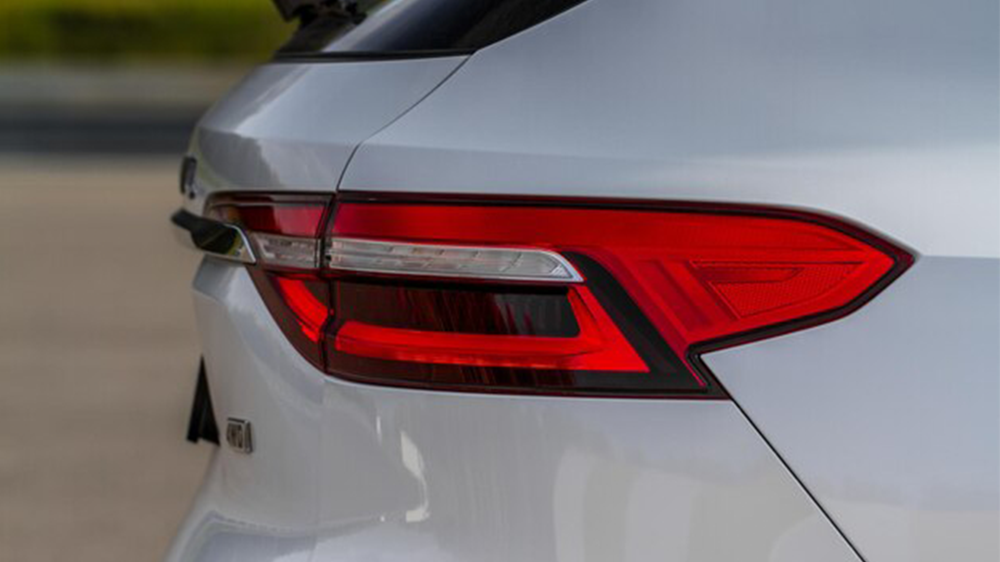

COMMON TERMS
ULEZ:
The Ultra Low Emission Zone (ULEZ) is an area in London, England, where an emissions standard based charge is applied to non-compliant road vehicles.Cruise Control:
An automotive feature that allows a vehicle to maintain a constant speed set by the driver, without continuous manual throttle input. Once activated, cruise control helps improve fuel efficiency and provides a more relaxed driving experience on highways. The driver can typically adjust the set speed or disengage the system as needed.
Heated Seat:
A feature that warms the vehicle's seats for increased comfort, typically controlled by a switch.Heated Steering
A feature that warms the steering wheel for increased comfort, often activated with a button or switch.Defog:
The process of removing condensation or frost from windows for improved visibility, often done using the vehicle's HVAC system.
Climate Control:
An advanced HVAC system that allows precise control of temperature and airflow within the vehicle.
Air Conditioning:
The system that cools and dehumidifies the air inside the vehicle, enhancing comfort in warm conditions.
Dashboard:
The control panel in front of the driver, displaying instruments such as speedometer, fuel gauge, and warning lights.
Power Windows:
Windows that can be raised or lowered electrically using a switch, typically located on the door panel.
Sunroof:
A movable panel in the roof of a car that can be opened for fresh air and natural light.
Push to Start:
A system that allows the driver to start the vehicle by pressing a button, typically when a key fob is present.
Auto Start:
A feature that enables the engine to start automatically, often used in remote start systems or hybrid vehicles.
Infotainment System:
A multimedia system in the vehicle that provides entertainment, navigation, and connectivity features.
Mileage:
The number of miles a vehicle has travelled. Also known as the distance a car can travel using a certain amount of fuel (kml/mpg). Often used to measure fuel efficiency.
Suspension:
The system of shocks, struts, and springs that supports the vehicle and provides a smooth ride.
Hydraulics:
A system that uses liquids to transmit force, often found in power steering and braking systems.
Log Book:
It tracks the registration and taxation history of a specific vehicle. The logbook serves to link a person to a specific vehicle, by demonstrating who keeps the car. The log proved the vehicle ownership.
VIN:
A vehicle identification number (VIN) (also called a chassis number or frame number) is a unique code, including a serial number, used by the automotive industry to identify individual motor vehicles, towed vehicles, motorcycles, scooters and mopeds, as defined by the International Organization for Standardization in ISO 3779 (content and structure) and ISO 4030 (location and attachment).
Understeer vs Oversteer:
Understeer - A handling condition where the front wheels lose traction during a turn, causing the vehicle to continue straighter than intendedOversteer - A handling condition where the rear wheels lose traction during a turn, causing the vehicle to turn more sharply than intended.

Registration Plate:
A metal or plastic plate affixed to a vehicle, displaying its registration number. Also known as a license plate.
Drivetrain:
The components that transfer power from the engine to the wheels, including the transmission, driveshaft, and axles.
Chassis:
The structural framework of a vehicle that supports its components. (Different types of chassis).
AWD, 4WD, FWD, RWD
1.AWD: A drivetrain that powers all four wheels simultaneously, providing improved traction and stability in various road conditions. AWD systems can be full-time or engage automatically based on conditions.2.4WD: Similar to AWD, 4WD also powers all four wheels but often allows the driver to manually engage or disengage the four-wheel drive mode. Commonly used in off-road vehicles and trucks for increased traction on challenging terrain.
3.FWD: A drivetrain configuration in which power is sent to the front wheels only. FWD is common in smaller and more fuel-efficient vehicles, offering simplicity and efficient packaging.
4.RWD: A drivetrain configuration in which power is sent to the rear wheels only. RWD is often found in performance and sports cars, providing balanced handling characteristics and ease of control.
AXLE:
A central shaft that connects and rotates the wheels of a vehicle; supports vehicle weight and transmits power from the engine to the wheels1.Drive Axle: A powered axle connected to the engine, responsible for transmitting power to the wheels; associated with the drivetrain (front-wheel drive, rear-wheel drive, or all-wheel drive)
2.Dead Axle: A non-powered axle not directly connected to the engine; primarily supports vehicle weight and maintains wheel position; can be part of solid or independent suspension systems

SAFETY:
Airbag:A safety device in a vehicle that rapidly inflates upon collision, providing cushioning and protection for occupants by reducing the impact forces. Typically part of the supplemental restraint system (SRS)

ABS:
A safety system that prevents wheel lockup during braking, enhancing steering control by modulating brake pressure. It improves vehicle stability and reduces stopping distances in emergency braking situations

Traction control:
A system that prevents wheel spin during acceleration by adjusting power delivery to the wheels, enhancing traction and stability, particularly in slippery conditions or during rapid acceleration

Tire Pressure
Pressure is defined as the force exerted on a surface per unit area. Tire pressure is measured in pounds per square inch (psi), bar or kPa. The recommended pressure for each tyre in a vehicle is defined by the manufacturer

Warning Lights
•Check Engine: Indicates a problem with the engine or emission control system. Requires diagnostic testing.•Battery Warning: Signals an issue with the vehicle's charging system, such as a failing battery or faulty alternator.
•Oil Pressure Warning: Alerts to low engine oil pressure, which can lead to engine damage. May be caused by low oil levels.
•Brake System Warning: Indicates a problem with the brake system, such as low brake fluid or issues with braking components.
•ABS Warning: Signals a problem with the Anti-lock Braking System (ABS). Requires attention to diagnose and fix.
•Traction Control: Illuminates when the traction control system is engaged or if there's a problem with the system.
•Airbag Warning: Indicates a fault in the airbag system, requiring immediate attention for safety reasons.
•Tire Pressure Monitoring System: Alerts to low tire pressure in one or more tires. Indicates a puncture, leak, or sensor issues.
•Engine Temperature: Warns of an overheating engine, often caused by low coolant levels or cooling system malfunctions.
•Fuel Level Warning: Indicates low fuel levels, reminding the driver to refuel.
•Transmission Temperature Warning: Alerts to high transmission fluid temperatures, indicating potential issues with the transmission.
•Washer Fluid Warning: Notifies when the windshield washer fluid is low and needs to be refilled

Lights:
•Fog Lights: Mounted low on the front of the vehicle to improve visibility in foggy or misty conditions.
•Daytime Running Lights: Automatically turn on when the vehicle is in motion during daylight hours to enhance visibility.
•Headlight: Front-facing lights used to illuminate the road ahead during low-light conditions or at night. Headlights are essential for visibility and safety.

•High Beam: The setting of a vehicle's headlights that produces a stronger and longer-reaching beam of light. High beams are typically used in low-visibility conditions on unlit roads but should be dimmed when approaching or following other vehicles.
•Low Beam: The setting of a vehicle's headlights that provides a shorter and less intense beam of light. Low beams are the standard setting for regular nighttime driving and are used in the presence of other vehicles to avoid blinding oncoming or preceding drivers.


•Taillights: Rear-facing lights that indicate the presence and width of the vehicle to other drivers. They also include brake lights, which illuminate when the driver applies the brakes.
